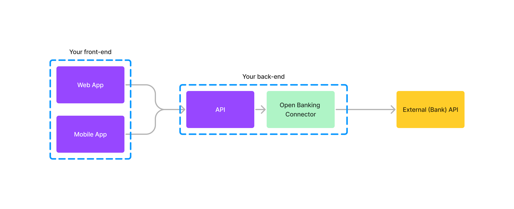

Guide
This section provides more information about where Open Banking Connector sits in your architecture and and what it does. It also covers infrastructure requirements.
Where does Open Banking Connector sit in my architecture?
The following diagram shows where Open Banking Connector sits in your architecture:

Essentially Open Banking Connector runs as a micro-service in your back-end that processes your requests to banks.
What does Open Banking Connector do?
Open Banking Connector provides simpler UK Open Banking APIs
The HTTP APIs provided by Open Banking Connector to your back-end include several that aim to be "simpler" versions of their UK Open Banking equivalents such as the Bank Configuration and Account and Transaction APIs.
The objective is not to re-design UK Open Banking but rather to simplify things by:
- Absorbing bank differences so that you can use the same requests for all banks.
- Absorbing complexities related to security aspects of Open Banking such as MTLS, tokens, signing etc.
A typical use of Open Banking APIs would be make the following requests:
- Create a registration with a bank to establish a relationship
- Create a consent at the bank and then get an end-user to authorise it
- Perform API calls relevant to the consent such as retrieving transactions or balances
Please see Get Started for examples of basic operations such as these.
The main simplifications for these requests when using Open Banking Connector are as follows:
- When creating a bank registration, rather than supply detailed configuration you only need to specify a bank profile and software statement profile. The bank profile associates all of a bank's specific configuration and customisation with the registration and any subsequent consents. The software statement profile ensures the right TPP identity is used when creating the registration.
- When creating a consent, you supply the bank registration ID (returned when creating the registration) instead of a token and can specify the template "MaximumPermissions" instead of needing to know what permissions are supported by a particular bank.
- When retrieving AISP objects such as transactions etc, you supply the consent ID (returned when creating the consent) instead of a token
- All data request and response objects are based on a single UK Open Banking spec revision and Open Banking Connector is capable of converting to and from older spec revisions if required for a bank
- No bank tokens are required as these are obtained, used and refreshed automatically by Open Banking Connector keeping them separate from other parts of your back-end
Open Banking Connector supports end-user auth in your app
Open Banking Connector is designed to allow you to support redirection-based authentication in your app. A great deal of information on this is provided by OBIE here.
Your app needs to interact with Open Banking Connector both before and after end-user auth.
Before end-user auth you need to create a time-sensitive auth context (auth session) in Open Banking Connector. This will remain valid for 10 minutes. If for any reason auth fails or too much time elapses, please create a new auth context before re-attempting auth. For an AISP consent, you can create an auth context using the POST /aisp/account-access-consent-auth-contexts endpoint. Upon creating an auth context, Open Banking Connector will return an auth URL you can redirect the user to. This URL should be used within 5 minutes to avoid signed object expiry.
After end-user auth, the bank will redirect to a secure URL your app provides (the redirect URL which can be selected from those in your software statement assertion (SSA) when creating a bank registration). This URL should display appropriate customer messaging and process the bank redirect data in the URL fragment. This redirect data needs to be forwarded by your back-end to Open Banking Connector via the POST /auth/redirect-delegate endpoint. This must occur within the 10-minute lifetime of the auth context.
There are many possible scenarios for end-user auth and it is strongly recommended to discuss your planned implementation with us so we can discuss security threat models and best practices.
Open Banking Connector stores bank registration and consent data
Open Banking Connector uses a database to store information about registrations and consents. This includes encrypted tokens associated with consents and auth session (auth context) information. It does not store or cache end-user transactions, balances etc.
What are Open Banking Connector's infrastructure requirements?
To host Open Banking Connector in your back-end infrastructure, you will need:
- a host (e.g. VM or Kubernetes cluster) to run the Open Banking Connector Docker image
- a relational database. Currently only PosgreSQL is supported in production but, as Open Banking Connector uses EF Core (Microsoft's .NET ORM), other database integrations should be relatively easy to add (for example, SQLite is supported in development environment).
- a means of supplying configuration/secrets to the Open Banking Connector container. Environment variables can be used and, in the case of secrets, could be e.g. dynamically pulled from a key secret vault. Parameters from AWS SSM Parameter Store can be used and we are open to adding other cloud sources/vaults as required. ASP.NET Core user secrets are supported in development environment.
Sensitive data including encrypted tokens are stored in the database. Thus it should be tightly secured including using at-rest encryption and not allowing access from any other application.
Secrets are essentially sensitive configuration settings such as keys. Consideration should be given to the security of these and also issues such as key rotation.
Please feel free to discuss with us any issues related to deployment of Open Banking Connector in your back-end infrastructure and in particular any issues related to security.
What are bank profiles?
All bank-specific information, customisations and behaviour is stored in an object called a bank profile. There is one for each bank and sandbox supported by Open Banking Connector and these are maintained to support changes in bank APIs and behaviour.
Currently-supported banks and their bank profiles are listed here.